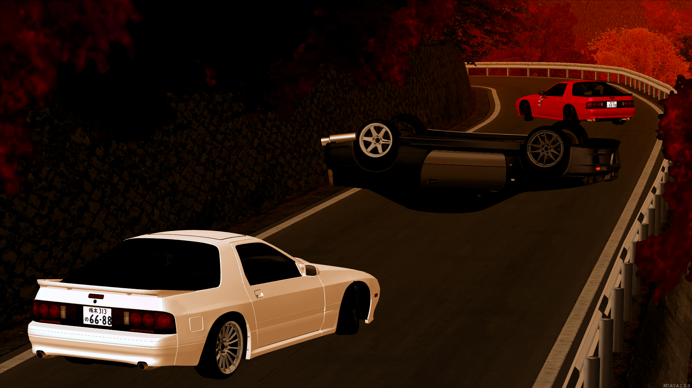
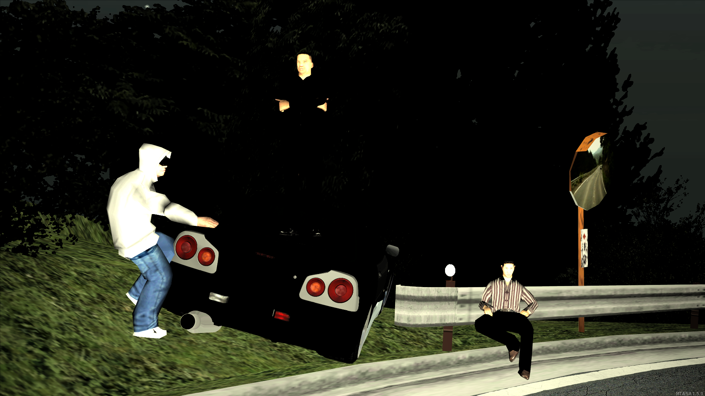
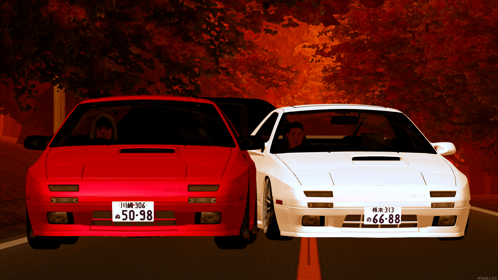

Фотографии с дрифт парадайса



Дмитрий был обычным дрифт парадайсером, но со временем
он стал проводить очень много времени на своем любимом
сервере и со временем стал геем
• DRIFT PARADISE •
Уникальный дрифт проект в мире MultiTheftAuto! Наш первый сервер был запущен в 2016 году!
Наши серверы:
№ 1 RED: 54.37.129.55:22012 [198/256]
№ 2 RED: 54.37.129.55:22014 [86/250]
№ 3 RED: 54.37.129.55:22016 [127/256]
№ 4 RED: 54.37.129.55:22018 [72/250]
№ 5 RED: 54.37.129.55:22020 [75/250]
№ 6 RED: 54.37.129.55:22022 [47/250]
№ 7 RED: 54.37.129.55:22024 [49/250]
№ 8 RED: 54.37.129.55:22026 [40/250]
№ 9 RED: 54.37.129.55:22028 [50/250]
№ 10 RED: 54.37.129.55:22030 [51/250]
№ 11 RED: 146.59.52.215:22012 [3/256]
№ 12 RED: 146.59.52.215:22014 [3/256]
№ 13 RED: 146.59.52.215:22016 [4/256]
№ 14 RED: 146.59.52.215:22018 [8/256]
№ 15 RED: 146.59.52.215:22020 [14/256]
№ 16 RED: 146.59.52.215:22022 [6/356]
№ 17 RED: 146.59.52.215:22024 [6/356]
№ 1 RUSSIAN: 54.37.129.55:23012 [29/250]
№ 2 RUSSIAN: 146.59.52.215:23020 [1/500]
Общий онлайн на всех серверах: 869/5254